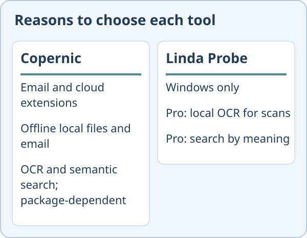

Linda Probe vs Copernic Desktop Search
Copernic and Probe both search documents. Choose around the sources you need and how you want to pay. This comparison relies on the competitor’s public site as of 30 October 2026.
Choose Copernic Desktop Search if
You need email and cloud sources alongside desktop files. Copernic lists Outlook, Thunderbird and cloud extensions. Its overview also says local files and email can be searched offline. Check which package includes your sources.
Choose Linda Probe if
You want file search on Windows with a one-time Personal or Team licence for Pro. Probe Pro offers local OCR, search by meaning and photo search by description or example. Copernic also lists OCR and semantic search; those are not exclusive to Probe.

What Linda Probe does not offer
It is closed source and runs only on Windows 10 and 11. The free edition covers file names and exact words only. OCR and meaning-based search require Probe Pro, unlocked with a paid or gift licence key. The installer is not code-signed yet, so Windows SmartScreen may warn. OCR can make mistakes on poor scans and handwriting.

Price
Linda Probe Free is for personal, non-commercial use. Probe Pro Personal costs USD 10 once for one named user on up to 3 devices; Team costs USD 30 once for up to 10 named users on 20 devices. These cover the purchased version and fixes; future major versions or models may require payment. Organization costs USD 500 per year for one organization at one site on up to 200 devices and renews automatically until cancelled. Taxes and the final total appear before payment. Personal and Team include a full refund on request within 14 days.
Copernic lists yearly subscriptions. Check its pricing page for the current amount; we did not confirm the final checkout price.
We did not confirm whether Copernic’s listed semantic search runs entirely locally. Its pricing page names Google Gemini and OpenAI for AI functions.
Official sources read for this comparison: Copernic Desktop Search · Copernic pricing.